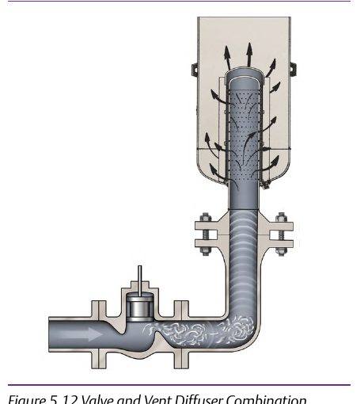

Inline and Vent Diffusers: Path-Treatment, Not Source-Treatment


Inline and vent diffusers treat noise downstream of the valve, by reducing the pressure ratio across a single stage into several smaller drops spread over the diffuser's length — the diffuser doesn't change what happens inside the valve at all, it's a path-treatment, not a source-treatment, contrasted directly against the source-treatment trim of the prior slide. Component Index: cvh-cmp-valve-inline-diffuser-photo, cvh-cmp-valve-vent-diffuser-diagram.